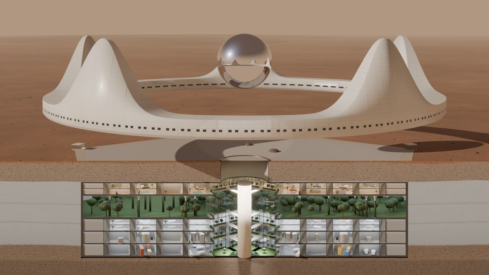
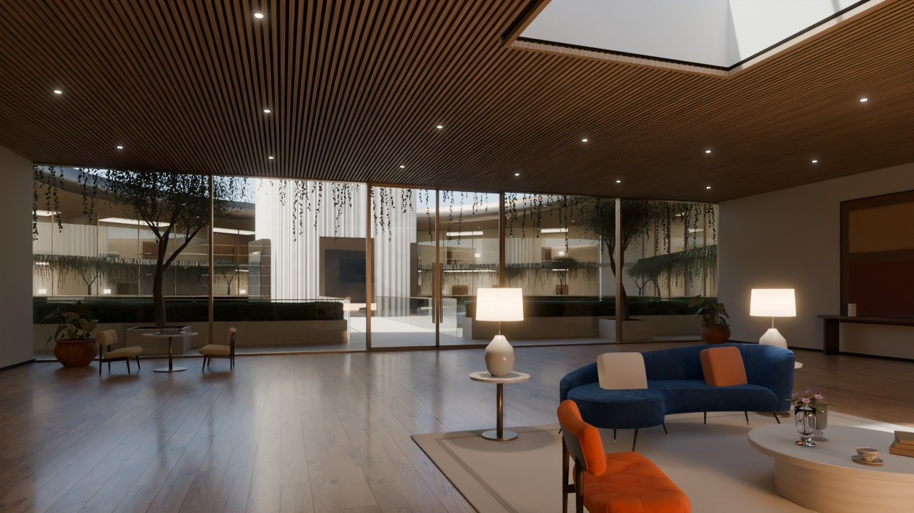
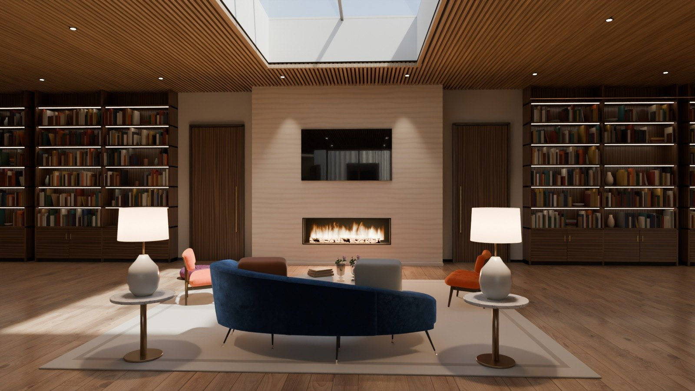
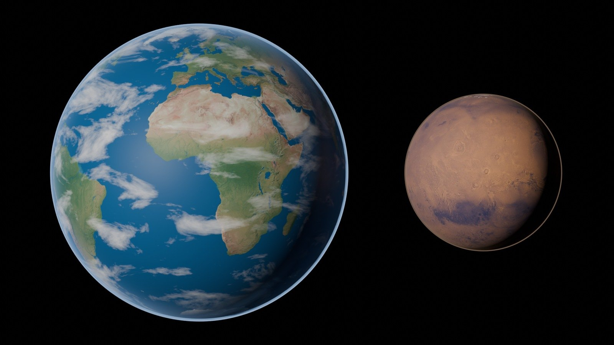
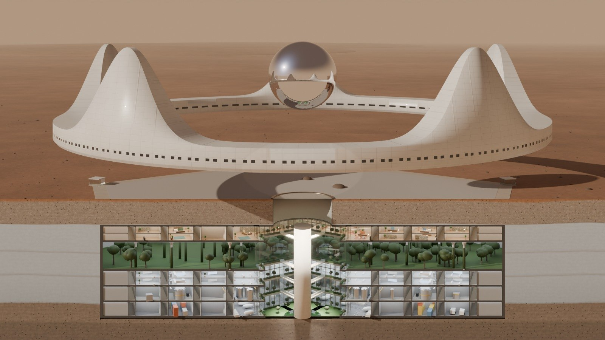
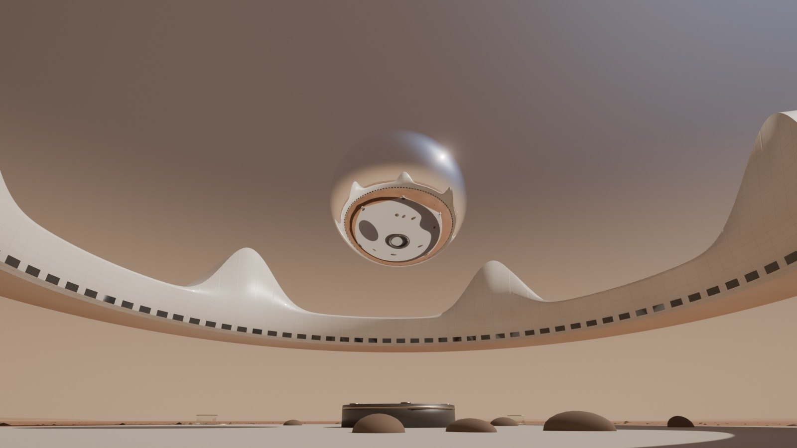

Jim's Retirement House
A white crown floating over a stone garden, and a five-level world below the ground, in Arcadia Planitia on Mars. Turn the whole house and click any part for its floor plan, then any room for its pictures, 360° views and facts.

The whole house, path-traced from the design model and cut through the middle, as in an architect's section: the Crown and the Orb above, the Stone Garden on the plain, and under 16 m of soil the Pentagon's five levels round the atrium, from Jim's residence on L1 down to the halls of L5. The cut turns with you.
Room by roomEvery space: what it is for, its plan, its pictures
Each area of the house has its own page. For every room: what it is for, the facts (size, materials, what is in it, the light), where it is on the floor plan, and path-traced pictures and 360° views, with furniture scanned from real things. Rooms go in as their pictures finish rendering.
 Above ground · 02·1The Crown, room by roomThe ten parts of the ring: Arrival, the master suite up, the Salon, Wellness, Dining, the sunset lounge, the Library, the Studio, the Observatory, the Garden room.
Above ground · 02·1The Crown, room by roomThe ten parts of the ring: Arrival, the master suite up, the Salon, Wellness, Dining, the sunset lounge, the Library, the Studio, the Observatory, the Garden room.

Below ground, L1 · 03·1Jim's residenceThe family room, the music room, the dining room and its bar, the master suite down round its moss garden.
Below ground, L1 · 03·2Round the atriumThe terraces, the bridges and the sun court; the great library, the thermal baths, the cinema and the guest lounge.The scienceMars, and how to live on it
Two pages of facts measured by spacecraft and published in studies, with their sources: the planet itself, and the engineering of getting there, building, water, air, food, energy, radiation and rocket fuel, each with how Jim's house does it.

The science · 00·1Mars, the planetSize, gravity, the sol and the year, the air, cold and radiation; Olympus Mons, Valles Marineris, Hellas, the polar caps and the ice of Arcadia Planitia.
The science · 00·2Living on MarsWhat to bring and what to make, building with Mars soil, water from ice, oxygen from the air, food under lamps, fission power, shielding, fuel made on Mars.The ideaA day house in the sky, a night house in the ground
Above ground, the Crown is for light and views. Its white ring of fired Mars soil floats 40 m up, with five spires, window slots that keep out the harsh sun, a mirror Orb at the centre, where the universe fills the rooms in 3D at a switch and the Wormhole Gate floats in the middle, and a pod hangar in the east spire. It is where Jim watches the blue sunsets, plays the piano in the salon and greets guests arriving from Earth.
Below ground, the Pentagon is for safety and abundance. Sixteen metres of soil stop the radiation, hold the air pressure in and keep the temperature steady. Its five levels hold Jim's residence, a garden level with orchards, a lake and a forest, his studio and workshops, the plant that makes air and water, and the halls where cargo, rovers and later a maglev train arrive.
Around it grows Arcadia City. Each new home takes the next seed of a sunflower spiral. The spaceport, 30 km east, sends ships on voyages to see space, refuelled with fuel made on Mars; the Wormhole Gate does the travelling.

Real, or future?
Real science and engineering
Almost everything in the book uses what is known today: the site and its ice, the air and radiation on Mars, making fuel from ice and air, fission reactors, shielding with soil, rocket-powered flight in thin air, farming under lights, the 26-month launch windows. The numbers are worked out and shown.
Future technology
A few things are dreams, on purpose, because Jim asked for them: the anti-gravity drives that hold the Crown up, the portals that replace lifts, the Wormhole Gate, the universe in VR that fills the Orb's rooms in 3D and the radiation glass of its rest rooms. They are marked like this box wherever they appear, with a real fallback where safety needs one.
ContentsThe chapters
Each chapter pairs what it looks like with how it works, with drawings, numbers and the choices still open.
For JimDecisions
Rev B of the floor plans is approved, and Jim answered every question this book raised on 1 October. Nothing is waiting for an answer. One answer became a new design for the Orb, shown here for review. Every requirement and decision is listed in the requirements and the decision log.
For review
- The Orb, Rev E: the universe in VR, and the ball is the Gate.From Jim's words. The universe is future-tech VR, shown directly in the 3D space of the Orb's rooms: no projector, no screen, no ball. A switch turns it on and off; it zooms from the whole universe down to Mars and the house; Earth and Mars float in the corner with their weather. The ball stays as the Wormhole Gate: choose a place and a time, walk across a short bridge into the ball, press send, and it shoots you like light straight to that place, instantly. The top ring has five rest rooms with radiation-glass windows. If it looks right, nothing is needed; otherwise say what to change.Chapter 02 · The Crown, the Orb · 1 Oct 2026
Decided on 1 October 2026
- The site is the real landing zone AP-1.Jim: "do your best judgment." Chosen: the spaceport on AP-1 (39.8° N, 202.1° E), the safest of the Arcadia sites studied for SpaceX Starship, with ice just under the ground; the house 30 km due west at 39.8° N, 201.4° E. Rev B's "about 44° N" is replaced.Chapter 01 · Site and city
- Air inside: 70 kPa with 27% oxygen.Jim: "do your best judgment." Chosen: air that breathes like Calgary. It halves the load on the walls and the gas needed, and suit trips need no long wait.Chapter 08 · Life support
- Sleep below ground most nights; rest in the Orb by day.Jim: yes, and "I should have some rooms to rest in the Orb", behind windows that block radiation. Sleeping in the master suite down and spending about six hours a day in the Crown keeps him near 20 mSv a year; the Orb's rest rooms count like the Crown.Chapter 08 · Life support · chapter 02, the Orb
- The Gate opens on the TTMath campus in the demo.Decided with our best judgment, as for the site and the air: zoom out to the whole universe, back in to the TTMath campus in Gale crater, and step through into demo 1. Any other place can be added later.Chapter 02 · The Crown, the Orb
- Moving in: 2027.Year 0 of the timeline. He launches in the window of November–December 2026 and lands at Arcadia Spaceport in mid-2027. In the story, the robots that build the house landed two windows earlier.Chapter 10 · Building it
RevisionsHow the design got here
| Rev | Date | What changed |
|---|---|---|
| A | 30 Sep 2026 | First floor plans of the Crown and the Pentagon, the site and the flight. |
| B | 30 Sep 2026 | From Jim's answers: the Crown floats on anti-gravity, sharper spires, the Orb and the Wormhole Gate, portals instead of lifts, master suites up and down, a dust storm in the flight. Approved. |
| C | 30 Sep 2026 | This design book: the Mars Atlas, the real site coordinates, and the systems designed in detail: structure, interiors, power, transport, the spaceport and fuel plant, life support, communications and the building sequence. |
| D | 1 Oct 2026 | From Jim's answers: the Orb becomes the Universe Hall, with lounges, rest rooms behind radiation glass, the corner dashboard of Earth and Mars, and the Gate on a bridge. Decided: the site on AP-1, air at 70 kPa, sleeping below ground, moving in in 2027. At Jim's request, nothing on the ground: no garden mirrors and no solar field, so four reactors supply the power. |
| E | 1 Oct 2026 | From Jim's words: the universe becomes future-tech VR in 3D, filling the Orb's rooms, with no projector and no ball. The ball becomes the Wormhole Gate: press send and it shoots you like light to the chosen place and time. The Orb is shown for Jim's review. |